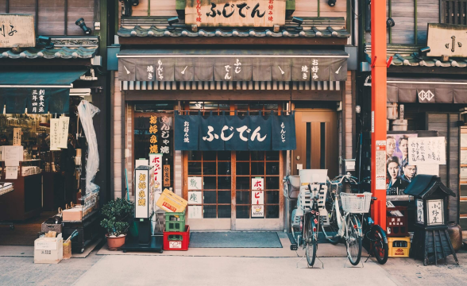

Osaka
Osaka é uma cidade agitada e moderna no Japãos. A cidade é famosa por sua gastronomia deliciosa e por ser um excelente ponto de partida para explorar outras cidades japonesas próximas.
Ver detalhes

Nossa viagem começou no Aeroporto Internacional de Narita, localizado a cerca de 60 km. Após desembarcar e fazer todos os procedimentos de imigração, fomos recebidos pela equipe da Jornada Viagens, que nos conduziu até o nosso hotel.
Nos hospedamos no elegante Hotel Granvia Kyoto, situado na estação de Kyoto. O hotel oferece uma vista deslumbrante para a cidade, e dispõe de uma variedade de serviços, incluindo um spa relaxante, uma piscina coberta, restaurantes sofisticados e um lounge bar. Fomos cativados pela atenção aos detalhes e pela excelência do atendimento.

Vista da cidade da janela do hotel!
Mostramos nosso tour pela cidade com uma visita ao famoso Templo Kinkaku-ji, conhecido como o Pavilhão Dourado, um dos mais emblemáticos e belos templos zen do Japão. Passeamos pelos jardins ao redor do templo, apreciando a arquitetura refletida na água do lago. Em seguida, exploramos o Mercado Nishiki, uma vibrante rua de comércio onde encontramos uma variedade de iguarias locais, desde sushi fresco até doces tradicionais japoneses. No dia seguinte, visitamos o Castelo Nijo, um impressionante exemplo da arquitetura feudal japonesa e um Patrimônio Mundial da UNESCO. À noite, jantamos em um restaurante local, onde degustamos pratos típicos da culinária de Quioto.
Quioto é conhecido por suas lojas tradicionais e mercados locais, e não pensamos em explorá-los. Fomos ao famoso bairro de Gion, onde encontramos lojas de artesanato japonês, como cerâmicas e tecidos, além de boutiques que vendem quimonos e acessórios tradicionais. Visitamos também o Mercado de Nishiki, um local vibrante e movimentado onde encontramos uma variedade de produtos locais, desde especiarias e chá até doces e ingredientes para a culinária japonesa.
Não se pode falar de Quioto sem mencionar sua gastronomia. Aproveite a oportunidade de degustar uma vasta gama de pratos locais, como sushi fresco, sashimi delicado, udon e tempura. Também experimentamos doces tradicionais como o wagashi, feitos com ingredientes como feijão vermelho e matchá. Cada refeição foi uma verdadeira cultura culinária japonesa.
Nossa viagem a Quioto com a agência Jornada Viagens foi uma experiência excepcional. A equipe da agência cuidou de todos os detalhes, desde a reserva do hotel até a escolha dos melhores pontos turísticos e restaurantes. Recomendamos a Jornada Viagens para todos que desejam explorar o Japão de forma inesquecível.
Osaka é uma cidade agitada e moderna no Japãos. A cidade é famosa por sua gastronomia deliciosa e por ser um excelente ponto de partida para explorar outras cidades japonesas próximas.
Ver detalhesCidade localizada no sudoeste do Japão, conhecida mundialmente por ter sido o alvo do primeiro bombardeio atômico da históri. Hoje, a cidade é um símbolo de paz e reconciliação. Além disso, Hiroshima também é conhecida por sua gastronomia.
Ver detalhes
Tóquio é uma metrópole vibrante e moderna do Japão, famosa por seus arranhões e avanços tecnológicos. Como uma das capitais mundiais, oferece uma mistura única de cultura tradicional e inovação, com seus templos antigos e bairros futuristas, proporcionando uma experiência completa.
Ver detalhes